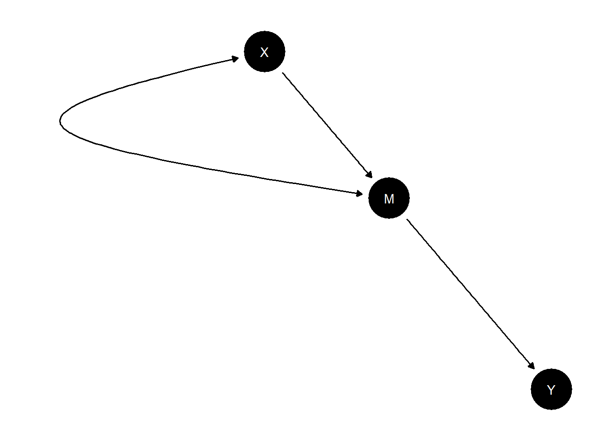
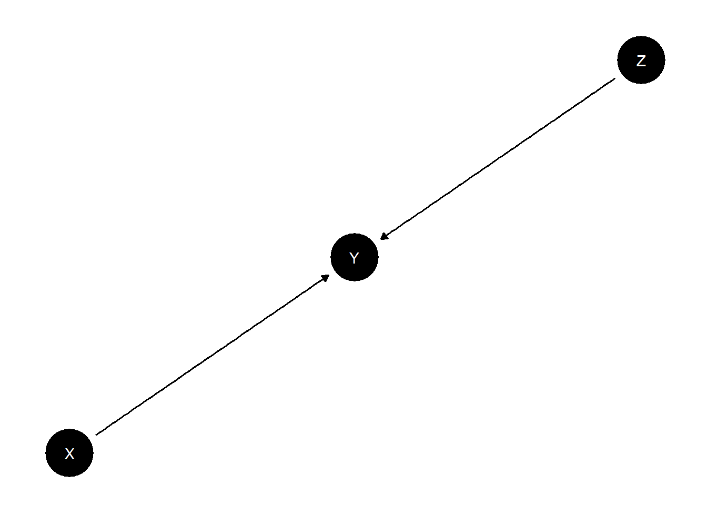

Chapter 6 Basic Models
6.1 The ladder of causation in an \(X \rightarrow Y\) model
We first introduce a simple \(X\) causes \(Y\) model with no confounding and use this to illustrate the “ladder of causation” (Pearl and Mackenzie 2018).
The model is written:
We will assume a “true” distribution over parameters. Let’s assume that the true effect of 0.5, but that this is not known to researchers. The .5 effect comes from the difference between the share of units with a positive effect (.6) and those with a negative effect (.1). (We say share but we may as well think in terms of the probability that a given unit is of one or other type.)
model <-
set_parameters(model, node = "Y", parameters = c(.2, .1, .6, .1))
kable(t(get_parameters(model)))| X.0 | X.1 | Y.00 | Y.10 | Y.01 | Y.11 |
|---|---|---|---|---|---|
| 0.5 | 0.5 | 0.2 | 0.1 | 0.6 | 0.1 |
We can now simulate data using the model:
With a model and data in hand we update the model thus:
From the updated model we can draw posterior inferences over estimands of interest.
We will imagine three estimands, corresponding to Pearl’s “ladder of causation.”
At the first level we are interested in the distribution of some node, perhaps given the value of another node. This question is answerable from observational data.
At the second level we are interested in treatment effects: how changing one node changes another. This question is answerable from experimental data.
At the third level we are interested in counterfactual statements: how would things have been different if some features of the world were different from what they are? Answering this question requires a causal model.
Here are the results:
results <- query_model(
updated,
query = list("Y | X=1" = "Y==1",
ATE = "Y[X=1] - Y[X=0]",
PC = "Y[X=1] > Y[X=0]"),
given = c("X==1", TRUE, "X==1 & Y==1"),
using = "posteriors")| Query (rung) | Query | Given | Using | Case.estimand | mean | sd | conf.low | conf.high |
|---|---|---|---|---|---|---|---|---|
| 1 Association | Y | X=1 | X==1 | posteriors | FALSE | 0.69 | 0.01 | 0.68 | 0.71 |
| 2 Intervention | ATE | - | posteriors | FALSE | 0.49 | 0.01 | 0.47 | 0.50 |
| 3 Imagining | PC | X==1 & Y==1 | posteriors | FALSE | 0.85 | 0.09 | 0.71 | 0.99 |
We see from the posterior variance on PC that we have the greatest difficulty with the third rung. In fact the PC is not identified (the distribution does not tighten even with very large N). For more intuition we graph the posteriors:
## `stat_bin()` using `bins = 30`. Pick better value with
## `binwidth`.## Warning: Removed 4 rows containing missing values
## (`geom_bar()`).Figure 6.1: ATE is identified, PC is not identified but has informative bounds
We find that they do not converge but they do place positive mass in the right range. Within this range, the shape of the posterior depends on the priors only.
6.2 \(X\) causes \(Y\), with unmodelled confounding
The first model assumed that \(X\) was as-if randomly assigned, but we do not need to make such strong assumptions.
An \(X\) causes \(Y\) model with confounding can be written:
If we look at the parameter matrix implied by this model we see that it has more parameters than nodal types, reflecting the joint assignment probabilities of \(\theta_X\) and \(\theta_Y\). Here we have parameters for \(\Pr(\theta_X=x)\) and \(\Pr(\theta_Y |\theta_X=x)\), which allow us to represent \(\Pr(\theta_X, \theta_Y)\) via \(\Pr(\theta_X=x)\Pr(\theta_Y |\theta_X=x)\).
| X0.Y00 | X1.Y00 | X0.Y10 | X1.Y10 | X0.Y01 | X1.Y01 | X0.Y11 | X1.Y11 | |
|---|---|---|---|---|---|---|---|---|
| X.0 | 1 | 0 | 1 | 0 | 1 | 0 | 1 | 0 |
| X.1 | 0 | 1 | 0 | 1 | 0 | 1 | 0 | 1 |
| Y.00_X.0 | 1 | 0 | 0 | 0 | 0 | 0 | 0 | 0 |
| Y.10_X.0 | 0 | 0 | 1 | 0 | 0 | 0 | 0 | 0 |
| Y.01_X.0 | 0 | 0 | 0 | 0 | 1 | 0 | 0 | 0 |
| Y.11_X.0 | 0 | 0 | 0 | 0 | 0 | 0 | 1 | 0 |
| Y.00_X.1 | 0 | 1 | 0 | 0 | 0 | 0 | 0 | 0 |
| Y.10_X.1 | 0 | 0 | 0 | 1 | 0 | 0 | 0 | 0 |
| Y.01_X.1 | 0 | 0 | 0 | 0 | 0 | 1 | 0 | 0 |
| Y.11_X.1 | 0 | 0 | 0 | 0 | 0 | 0 | 0 | 1 |
With the possibility of any type of confounding, the best we can do is place “Manski bounds” on the average causal effect.
To see this, let’s plot a histogram of our posterior on average causal effects, given lots of data. We will assume here that in truth there is no confounding, but that that is not known to researchers.
data5000 <- make_data(
model, n = 5000,
parameters = c(.5, .5, .25, .0, .5, .25, .25, 0, .5, .25))
data100 <- data5000[sample(5000, 100), ]Figure 6.2: Modest gains from additional data when ATE is not identified
The key thing here is that the posterior on the ATE has shifted, as it should, but it is not tight, even with large data. In fact the distribution of the posterior covers one unit of the range between -1 and 1.
6.3 \(X\) causes \(Y\), with confounding modeled
Say now we have a theory that the relationship between \(X\) and \(Y\) is confounded by possibly unobserved variable \(C\). Although \(C\) is unobserved we can still include it in the model and observe the confounding it generates by estimating the model on data generated by the model (but without benefiting from observing \(C\)). We will assume that it is know that \(X\) does not have a negative effet on \(X\). In addition we will assume that both \(C\) and \(X\) have a positive effect on \(Y\)—though this is not known (and so this is built into the model parameters but not into the priors).
model <- make_model("C -> X -> Y <- C") |>
set_restrictions("(X[C=1] < X[C=0])") |>
set_parameters(
statement = c("(Y[X=1] < Y[X=0]) | (Y[C=1] < Y[C=0])"),
parameters = 0)The ATE estimand in this case is given by:
| Query | Given | Using | Case.estimand | mean |
|---|---|---|---|---|
| ATE | - | parameters | FALSE | 0.3333 |
A regression based approach won’t fare very well here without data on \(C\). It would yield a precise but incorrect estimate.
data <- make_data(model, n = 1000)
estimatr::lm_robust(Y~X, data = data) |>
tidy() |>
kable(digits = 2)| term | estimate | std.error | statistic | p.value | conf.low | conf.high | df | outcome |
|---|---|---|---|---|---|---|---|---|
| (Intercept) | 0.26 | 0.02 | 13.45 | 0 | 0.22 | 0.30 | 998 | Y |
| X | 0.47 | 0.03 | 16.80 | 0 | 0.41 | 0.52 | 998 | Y |
In contrast, the Bayesian estimate takes account of the fact that we are missing data on \(C\).
Our posteriors over the effect of \(X\) on \(Y\) and the effect of the unobserved confounder (\(C\)) on \(Y\) have a joint distribution with negative covariance.
To illustrate we update on the same data (note that although relationship between \(C\) and \(Y\) is resrticted in the parameters it is not restricted in the priors). We then plot the joint posterior over our estimand and a measure of confounding (we will use the effect of \(C\) on \(Y\), since we have built in already that \(C\) matters for \(X\)).
updated <- update_model(model, select(data, X, Y))
ate <-
query_distribution(updated, "c(Y[X=1] - Y[X=0])", using = "posteriors")
confound <-
query_distribution(updated, "c(Y[C=1] - Y[C=0])", using = "posteriors")The strong negative correlation shows that when we update we contemplate possibilities in which there is a strong effect and negative confounding, or a weak or even negative effect and positive confounding. If we knew the extent of confounding we would have tighter posteriors on the estimand, but our ignorance regarding the nature of confounding keeps the posterior variance on the estimand large.
6.4 Simple mediation model
We define a simple mediation model and illustrate learning about whether \(X=1\) caused \(Y=1\) from observations of \(M\).
model <- make_model("X -> M -> Y; X <-> M") |>
set_parameters(node = "M", given = "X.0", parameters = c(.2, 0, .8, 0)) |>
set_parameters(node = "M", given = "X.1", parameters = c(.2, .8, 0, 0)) |>
set_parameters(node = "Y", parameters = c(.2, 0, .8, 0)) Data and estimation:
result <- query_model(
updated,
queries = list(COE = "c(Y[X=1] > Y[X=0])"),
given = c("X==1 & Y==1", "X==1 & Y==1 & M==0", "X==1 & Y==1 & M==1"),
using = "posteriors")| Query | Given | Using | Case.estimand | mean | sd | conf.low | conf.high |
|---|---|---|---|---|---|---|---|
| COE | X==1 & Y==1 | posteriors | FALSE | 0.2441 | 0.1794 | 0.0140 | 0.6674 |
| COE | X==1 & Y==1 & M==0 | posteriors | FALSE | 0.2484 | 0.2124 | 0.0059 | 0.7655 |
| COE | X==1 & Y==1 & M==1 | posteriors | FALSE | 0.2386 | 0.2138 | 0.0029 | 0.7644 |
Note that observation of \(M=0\) results in a near 0 posterior that \(X\) caused \(Y\), while observation of \(M=1\) has only a modest positive effect. The mediator thus provides what qualitative scholars call a “hoop” test for the proposition that \(X\) caused \(Y\).
6.5 Simple moderator model
We define a simple model with a moderator and illustrate how updating about COE is possible using the value of a moderator as a clue.

data <- make_data(
model, n = 1000,
parameters = c(.5, .5, .5, .5,
.01, .01, .01, .01, .01, .01, .01, .01,
.01, .85, .01, .01, .01, .01, .01, .01))result <- query_model(
updated,
queries = list(COE = "Y[X=1] > Y[X=0]"),
given = list("X==1 & Y==1", "X==1 & Y==1 & Z==0", "X==1 & Y==1 & Z==1"),
using = "posteriors")| Query | Given | Using | Case.estimand | mean | sd | conf.low | conf.high |
|---|---|---|---|---|---|---|---|
| COE | X==1 & Y==1 | posteriors | FALSE | 0.89 | 0.03 | 0.83 | 0.94 |
| COE | X==1 & Y==1 & Z==0 | posteriors | FALSE | 0.42 | 0.16 | 0.14 | 0.74 |
| COE | X==1 & Y==1 & Z==1 | posteriors | FALSE | 0.93 | 0.02 | 0.89 | 0.97 |
Knowledge of the moderator provides sharp updating in both directions, depending on what is found.